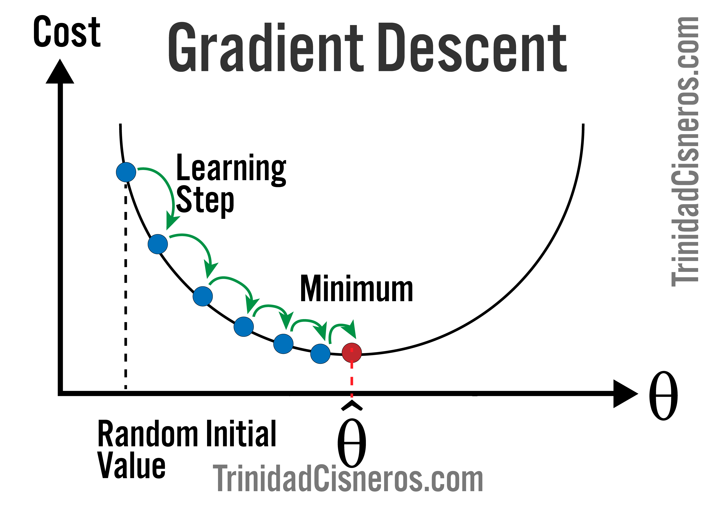

A Look into Gradient Descent using Python.
First Posted: 8-8-2020
Last Updated: 8-8-2020

Linear Regression and the Need for Gradient Descent
- Linear regression is a commonly used machine learning model because of how easy it is to
implement, and interpret.
-
Linear regressions are used to estimate the linear relationships between continuous
or/and categorical data and a continuous output variable.
- As a machine learning algorithm, linear regression makes predictions about some y variable given the weighted sum of the input features (x variables) and the bias term (intercept).
- Several performance methods are available to measure how well the model performs at making predictions (or rather, how much error the system makes in its predictions). The root mean square error is commonly used for regression tasks, although there are other measures (mean absolute error).
- These errors at making predictions are often thought of as a 'cost', and a cost function is used to provide an estimate of how badly the model performs.
- The goal in machine learning is to obtain a model that has the lowest 'cost' (inaccurate predictions), and to this end, there are linear regression training models that help find the optimal parameters that minimize the cost function over the training set of data.
Gradient Descent
- Is a first-order iterative optimization algorithm that is used to find a local minimum of a
differentiable function.
- In other words, it gradually finding the parameters that minimize errors between the models predicted value and the actual
values (the cost function).
- There are three commonly used gradient descent: a) Batch, b) Stochastic, and c) Mini-Batch.
- Batch gradient descent, which is the focus of this post, iterates through the full training set X, making this training model perform the slowest of the three discussed here.
- Stochastic gradient descent picks random instances in the training set at every step and computes the gradient at each step. This training model is less regular than the batch gradient descent since it is 'bouncing' around random instances, but on average, the cost function gradually decreases.
- Mini-Batch gradient descent, computes the cost function on small random instances, and its advantage over the other two methods described above, is that it has performance boosts under certain conditions.
Why is this important?
Linear regression is a powerful machine learning model, and although you can use the normal equation to train a model that is simple, gradient descent is better suited for cases where there are a large number of features, or the training data is massive.
The project goals
- Use (batch) gradient descent to train a linear regression model to predict the life satisfaction score from various countries report to Organization for Economic Co-operation and Development, based on the GDP reported by the International Monetary Funds.
- Provide the python code used to carry out this analysis.
- Discuss the mathematical principles behind this training model.
Resources & Citations
- Géron, Aurélien. Hands-on Machine Learning with Scikit-Learn, Keras, and Tensorflow: Concepts,
Tools, and Techniques to Build Intelligent Systems. , 2019. Print.
Methods
Data
- The data for this project was obtained from two sources, the Better Life Index data from the Organisation for Economic Co-operation and Development (OECD) website. (OECD) website
- Gross domestic product (GDP) per capita in 2015 from the International Monetary Fund. International Monetary Fund
Analysis
The programming language Python was used in this project. The matplotlib library was used
to visualize the data. Pandas was used to wrangle the data, and the numpy, and Scikit-Learn libraries
were used in the calculations and machine learning models.
Results:
Download Jupyter
Notebook
Data extraction, transformation, loading, and exploring pipeline
Demonstrate how to perform a gradient descent on this dataset.
Explain the mathematics behind the gradient descent.
{kind=link}